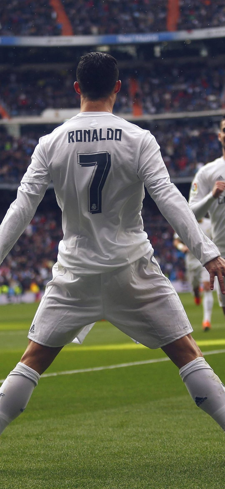
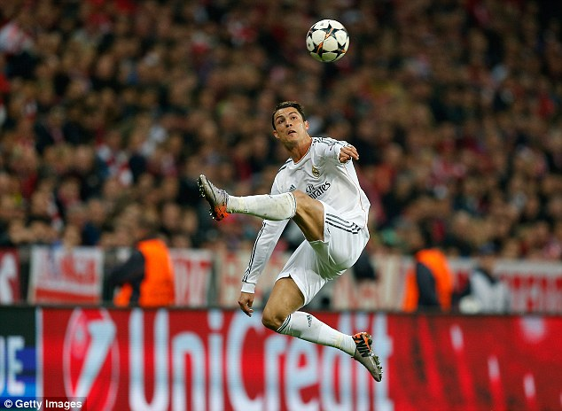
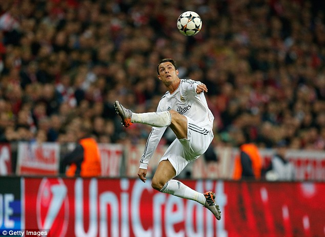

Cristiano Ronaldo
About Cristiano Ronaldo
Cristiano Ronaldo dos Santos Aveiro (Portugalisht: kɾiʃˈtjɐnu ʁoˈnaɫdu; lindur më 5 shkurt 1985) është një futbollist profesionist portugez i cili luan si sulmues për klubin saudit Al Nassr dhe kombëtaren portugeze. Ai është kapiten i të dy ekipeve. I konsideruar shpesh si lojtari më i mirë i botës dhe një nga më të mirët e të gjitha kohërave,[3][4][5] Ronaldo ka fituar Topin e artë pesë herë, duke qënë lojtari evropian me më shumë trofe, si dhe i pari që ka fituar katër Këpuca të Arta Evropiane.

 
